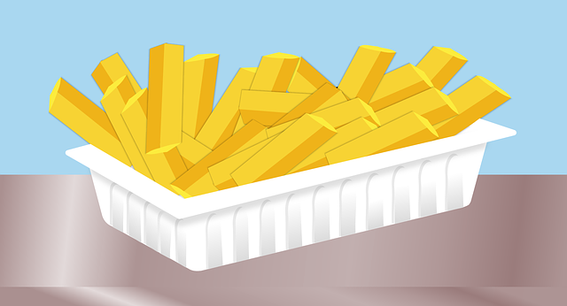

Patatas fritas
Receta de patatas fritas caseras

Ingredientes
- 3 ó 4 patatas (300g.)
- 4 dientes de ajo
- Aceite de oliva
- Sal
Elaoración (Pasos)
- Calentar aceite en una sárten.
- Añadir las patatas cortadas, la sal y los ajos.
- Freír al gusto.
- Servir en plato.
Volver al Indice